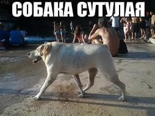
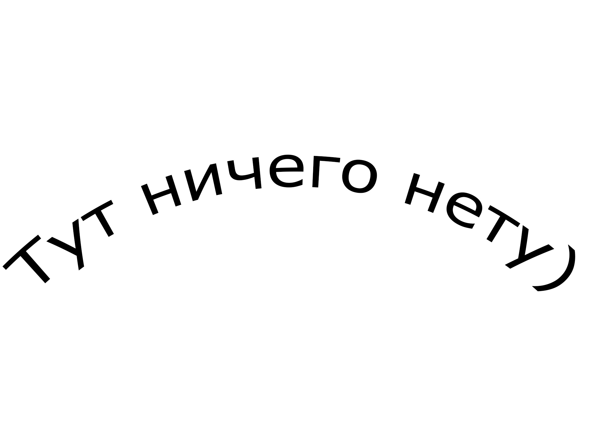

Сутулая собака
Выражение — впервые прозвучала в некогда популярной у молодежи программе «Дом-2», там в июне 2015 один из участников Евгений Кузин так назвал девушку Камилу Коробейникову, он часто повторял это выражение на повышенных тонах, а потом, от бессилия и, исчерпав все аргументы, даже толкнул девушку - из-за этого недостойного мужчины поведения фраза и запомнилась. Если рассматривать происхождение фразы - этимология доподлинно неизвестна, но выражение часто изпользуется в ряду жаргонизмов и разговорного фольклора, применительно к работникам канцелярии, наряду с такими выражениями как • бумажная душа • канцелярская крыса • приказный крючок • чернильная крыса и др. Сутулой собакой называют человека, которого хотят унизить, показать свою доминанту над более слабым, часто более духовноразвитым. Сравнение идет по линии сходства с внешностью собаки, которая в непонятной ситуации, вызывающей страх, выгибает спину, скрывая голову и переходит в состояние ожидания или торможения.
Зачем на жопе волосы?
Pастительность на ягодицах - интересный и щекотливый вопрос, потому что в такой ситуации оказываются абсолютно все: как мужчины, так и женщины. Тем не менее признаться в этом и искать помощи у профессионалов способны только довольно храбрые личности. Но стыдиться здесь совершенно нечего – это совершенно нормальное расположение покрова, который выполняет свои определенные функции. Прежде всего, следует упомянуть то предназначение, которое большинство не берет в расчет – трение при движении ягодиц. Если полностью гладкая кожа будет соприкасаться друг с другом на протяжении определенного времени, то это вызовет приличное раздражение, которое сменится повреждениями поверхности – эрозиями. Также волоски этой зоны осуществляют вентиляцию поверхности. При отсутствии оной, все «ароматы» будут заперты, что повлечет дополнительные неприятные ощущения, а пот будет накапливаться, стимулируя намокание. Другими словами, природа ничего не создала впустую. Да, полностью гладкая кожа ягодичной зоны дарит приятные ощущения чистоты и свежести, а, кроме того, нравится партнерам. К сожалению, густота, цвет и длина этого покрова отличается в силу разных причин: пола, возраста, гормонального статуса, наследственности, лекарственной терапии и других факторов. Следовательно, приняв решение удалить покров, очень важно еще активнее соблюдать гигиену для восполнения утраченных «работников».

Мыл машину на самообслужке, пена, грязь летят, снял куртку, чтобы не запачкать. Помыл, всё отлично, сел - уехал до супермаркета неподалёку, выхожу, одел куртку, подхожу ко входу, понимаю, что бумажника в кармане нет. Надежда, что выпал в машине, не оправдалась. Вечер, темно, нихрена не видно, вокруг машины тоже нет. В бумажнике наличка 15к, банковские карты, документы на машину, оружие, права. Послезавтра ехать с семьёй за 1500 км. Ощущения ..цкие. Пулей вернулся на мойку, понимаю, что там очередь, и если выронил там, шансов не много, или уже уехали, или смылся. Там смотрю камеры с мойщиком, картинка очень не очень - тоже болт. Возвращаюсь к супермаркету, ещё раз всё обшариваю - естественно ничего. Ну, думаю, звиздец. Восстанавливать все корки, карты - это жопа, что делать с поездкой - вообще ХЗ. И тут паренёк, "извините говорит, это не Вы обранили", и держит моё портмоне. Да мой ты родный!!! Сверил права с моим фейсом, только после этого отдал. Ни копейки не взял, как ни упрашивал его. Можно, говорит, кофе за 35 р. из аппарата. Больше ничего не возьму. Вот так незнакомый Алексей из г. Орла утвердил мою веру в людей. Если вдруг читаешь, ещё раз спасибо!!! Всем добра и хороших людей вокруг!
я же говорил, что тут ничего нету :(
Это моя первая работа, так что не суди строго.